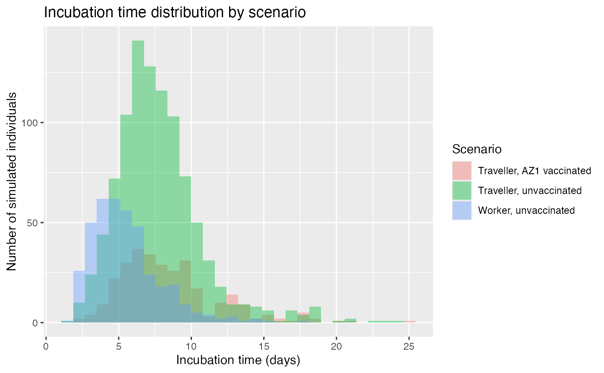

Overview of the quarantine breach analysis
overview.RmdIntroduction
This vignette provides a brief overview of the covidQuarantineViz
package. It shows the structure of the quarantine_data dataset and
reproduces a simple visualisation similar to the analysis in ETC5523.
This vignette forms part of ETC5523 Assignment 4: Turning
analysis interactive. It shows how the
covidQuarantineViz package wraps the simulation outputs
from the COVIDQuarantine model and reproduces key steps from the earlier
ETC5523 assignments in a reproducible and interactive way.
The data
The main dataset in this package is quarantine_data, which combines three simulation outputs from the COVIDQuarantine model (Lydeamore et al.) for different quarantine and vaccination scenarios.
quarantine_data |>
head()
#> days_infectious_community days_in_quar days_in_extended_quar
#> 1 1.4146924 4 0
#> 2 2.8309601 4 4
#> 3 0.4137212 2 4
#> 4 1.1789740 4 0
#> 5 3.8798872 4 0
#> 6 1.3757392 2 14
#> days_in_isolation t_latent t_incubation t_post_incubation time_discharged
#> 1 10 0.1 4.822449 9.692244 158
#> 2 10 0.1 9.820436 9.110525 162
#> 3 10 0.1 6.466695 8.747026 1774
#> 4 10 0.1 8.001724 8.977250 1867
#> 5 10 0.1 8.858909 9.020979 2150
#> 6 0 0.1 6.582189 8.993550 2330
#> index_case symptomatic vaccinated compliant FoI_max integrated_FoI
#> 1 0 0 0 1 2.704994e-04 9.979526e-06
#> 2 0 0 0 1 3.691373e-01 6.508962e-02
#> 3 0 0 0 1 1.905661e+00 6.236900e-03
#> 4 1 0 0 1 1.710111e-06 4.684067e-08
#> 5 0 0 0 1 3.902629e-07 1.424251e-07
#> 6 0 0 0 1 5.485896e-01 2.072547e-02
#> scenario group days_to_detection tested_positive
#> 1 Traveller, unvaccinated traveller NA NA
#> 2 Traveller, unvaccinated traveller NA NA
#> 3 Traveller, unvaccinated traveller NA NA
#> 4 Traveller, unvaccinated traveller NA NA
#> 5 Traveller, unvaccinated traveller NA NA
#> 6 Traveller, unvaccinated traveller NA NA
#> expressed_symptoms time_removed FoI
#> 1 NA NA NA
#> 2 NA NA NA
#> 3 NA NA NA
#> 4 NA NA NA
#> 5 NA NA NA
#> 6 NA NA NAThe scenario column identifies the simulation scenario (for example, traveller versus worker, vaccinated versus unvaccinated), and the group column distinguishes between travellers and workers.
Example summary and plot
Below is a simple example summarising the average incubation time by scenario.
quarantine_data |>
dplyr::group_by(scenario) |>
dplyr::summarise(
mean_incubation = mean(t_incubation, na.rm = TRUE),
.groups = "drop"
)
#> # A tibble: 3 × 2
#> scenario mean_incubation
#> <chr> <dbl>
#> 1 Traveller, AZ1 vaccinated 8.49
#> 2 Traveller, unvaccinated 7.73
#> 3 Worker, unvaccinated 5.49We can also visualise the incubation time distribution for each scenario.
quarantine_data |>
ggplot2::ggplot(ggplot2::aes(x = t_incubation, fill = scenario)) +
ggplot2::geom_histogram(position = "identity", alpha = 0.4, bins = 30) +
ggplot2::labs(
x = "Incubation time (days)",
y = "Number of simulated individuals",
fill = "Scenario",
title = "Incubation time distribution by scenario"
)
This plot illustrates how the incubation time distribution shifts under different assumptions about vaccination and whether the scenario relates to travellers or workers.